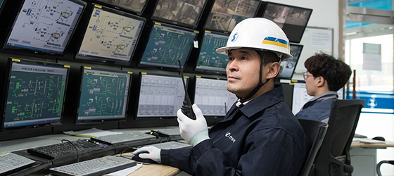
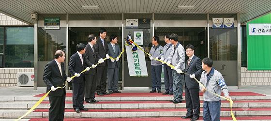
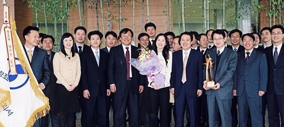
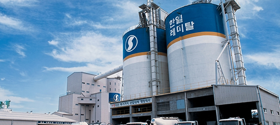
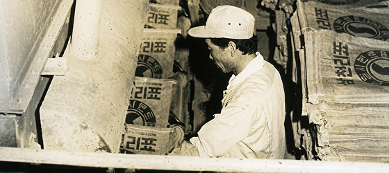
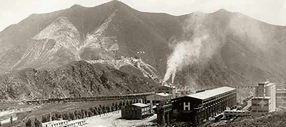

회사소개
회사소개
회사연혁
2020s

-
2026
'한국에서 가장 존경받는 기업' 시멘트 산업부문 23년 연속 1위 선정
'초유지 콘크리트' 기술성능 인증 획득
'내한 콘크리트' 기술인증 획득
-
2025
한국품질만족지수(KS-QEI) 3개 부문 1위 선정 — 포틀랜드시멘트 16년, 드라이 모르타르 17년, 레디믹스트콘크리트 6년 연속
에너지효율목표제도(KEEP30) 우수기업 인증 2년 연속 획득
'한일 그린나눔' 자원순환 기부 캠페인 시작
2010s

-
2017
환경부 지정 녹색기업 선정
-
2014
환경부 지정 녹색기업 선정
-
2011
시멘트 업계 최초 환경부 지정 녹색기업 선정
WITH 봉사단 창단
-
2010
한국품질만족지수(KS-QEI) 1위 선정 시작
2000s

-
2004
업계 최초 전 사업장 ISO 9001(품질경영시스템) 인증 취득
'한국에서 가장 존경받는 기업' 시멘트 산업부문 1위 선정 시작
1990s

-
1992
삼천리재단을 우덕재단으로 개칭
-
1991
국내 최초 드라이몰탈 시장 개척
1980s

-
1987
중앙연구소(現 기술연구소) 설립
-
1983
삼천리재단 설립 (現 우덕재단)
1960-70s

-
1970
업계 최초 벌크 시멘트 출하
-
1964
업계 최초 시멘트 수출 달성
-
1961
한일시멘트 창립